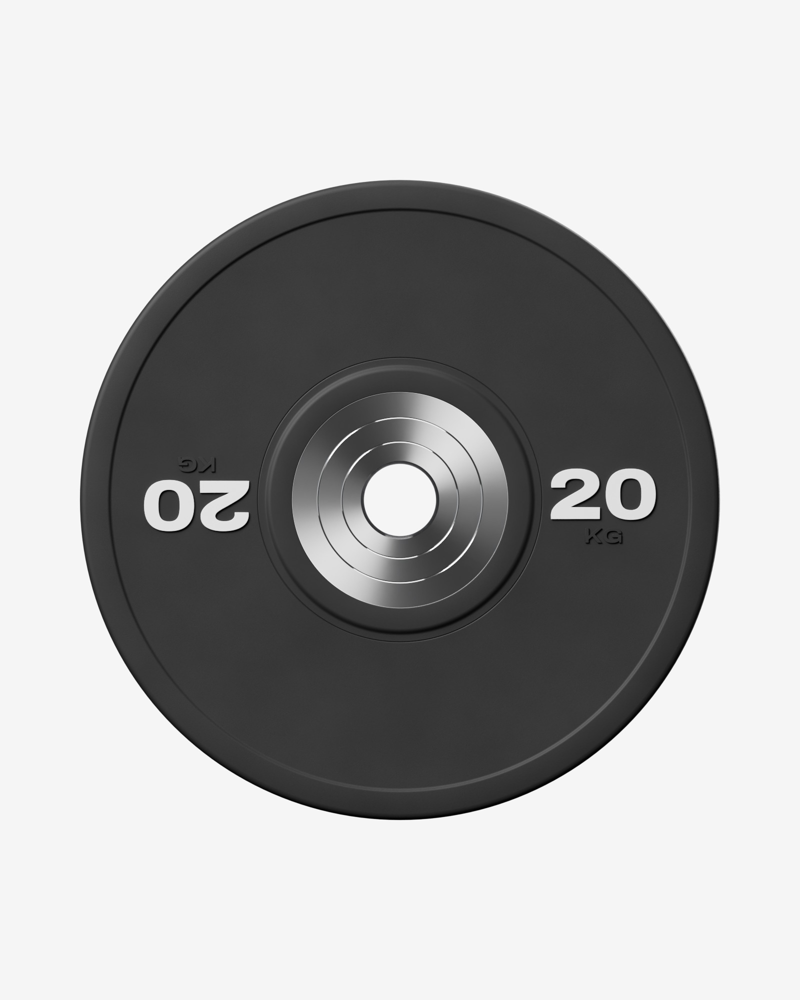
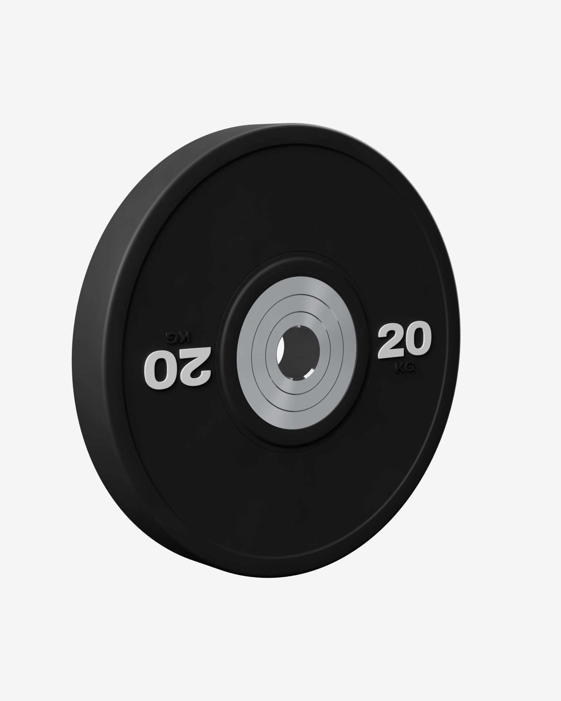
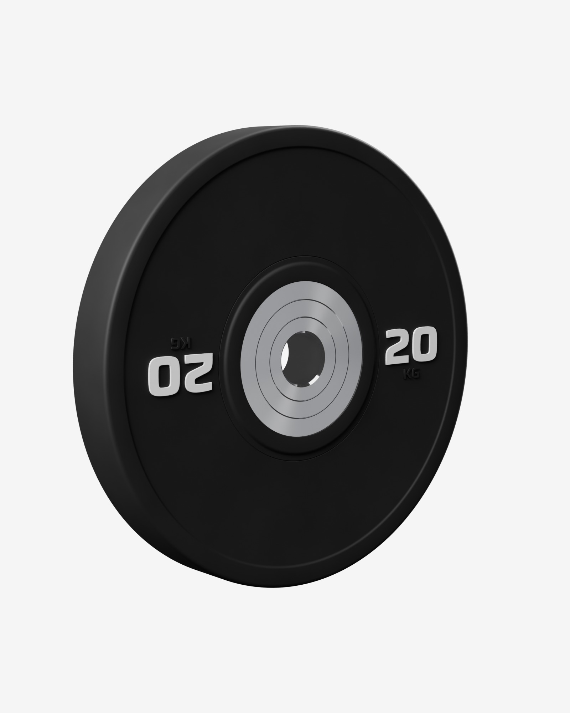
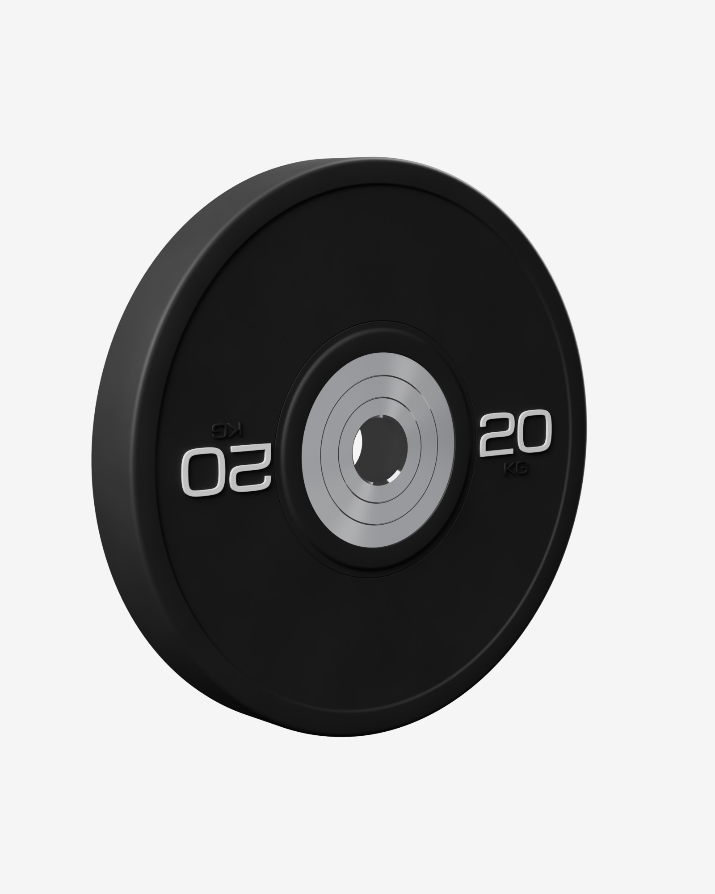
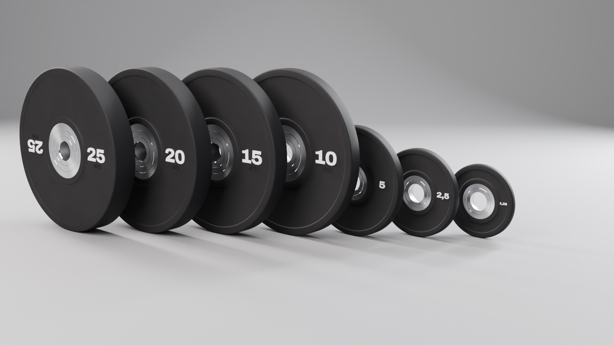
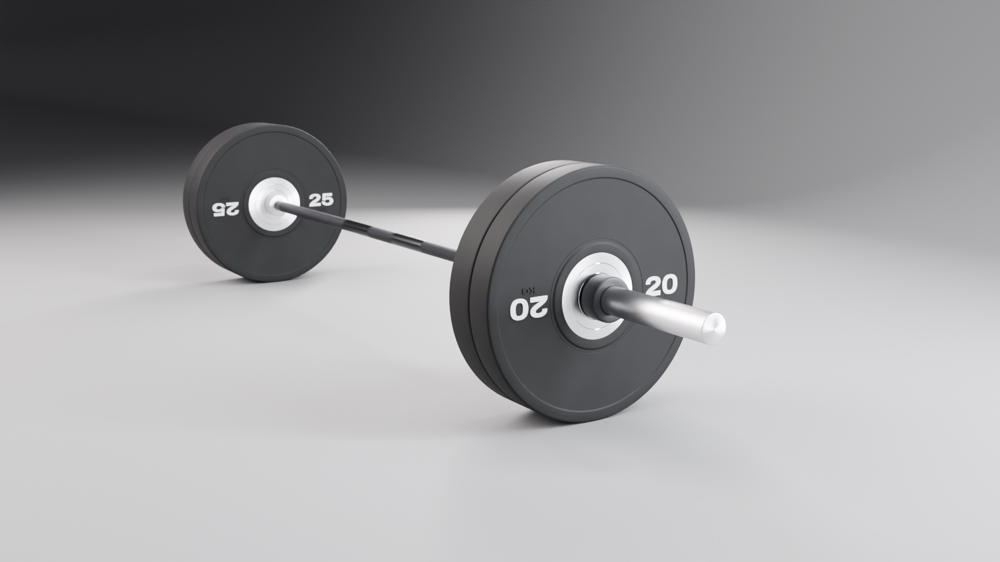
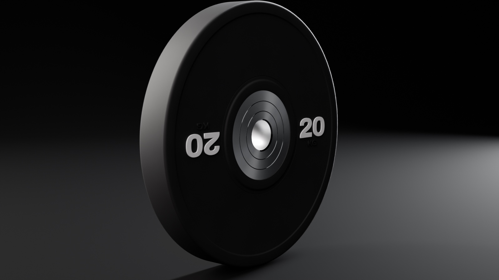
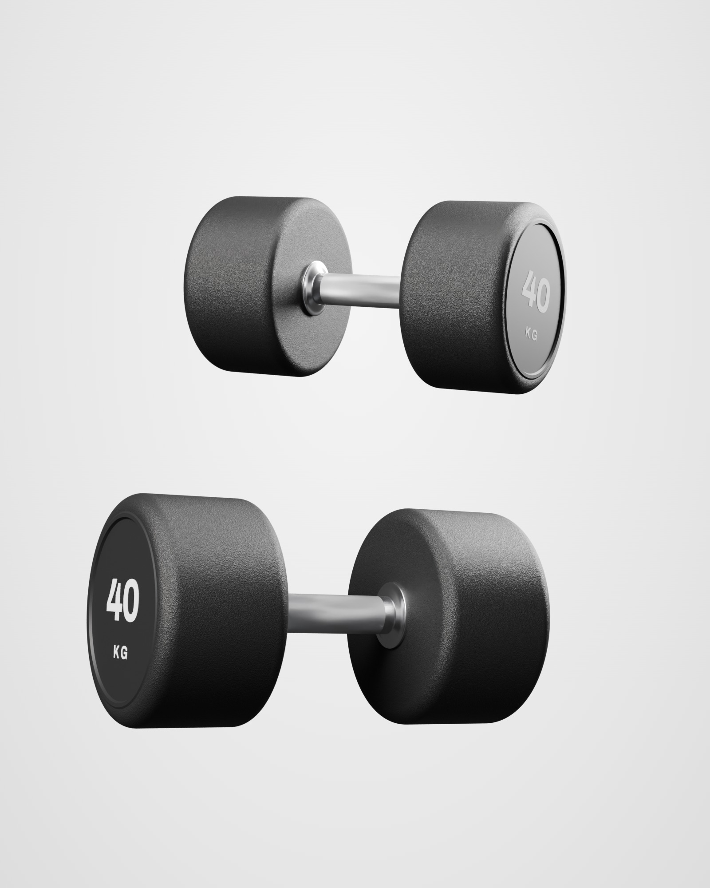
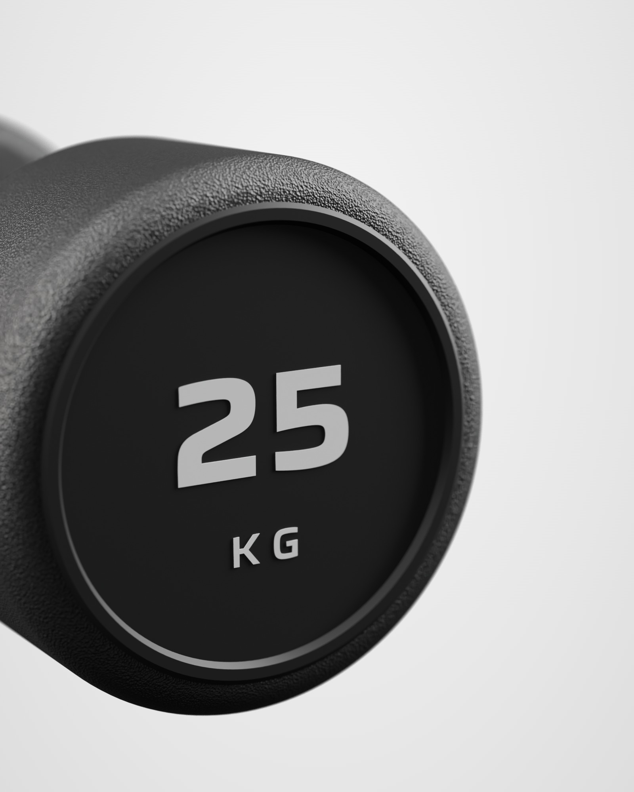

Le disque reprend les disques Eleiko de ta référence, en noir. L'haltère, c'est le rond B retravaillé d'après l'haltère de ta référence.
Les rendus imitent aussi la photo : le disque de face et sans perspective sur fond blanc, les haltères qui flottent sur un gris clair.
Ce qui est fait
Le disque
Noir et épais : 58 mm pour le 20 kg, 66 mm pour le 25 kg ; 45 cm de diamètre de 10 à 25 kg.
Un rebord en relief sur le pourtour, une fine ligne autour du moyeu, une bague de caoutchouc.
Un grand insert en acier tourné : reflets brossés en éventail et deux rainures polies.
Le poids en blanc et en relief à droite et à gauche (retourné), « KG » ton sur ton dessous. Le haut et le bas restent vides.
L'haltère
Des têtes rondes et épaisses (0,57 fois leur diamètre), avec de grands rayons des deux côtés.
Une face en médaillon lisse et creusé, cerclé d'un liseré, et un tour en caoutchouc grainé.
Le chiffre et « KG » imprimés en blanc. Pas de marque.
Une poignée en acier satiné moletée et des collerettes d'acier.
Trois variantes : trois polices
La forme est la même partout ; seule la police des chiffres change. Les trois sont libres de droits (licence OFL) : elles peuvent aller dans l'app.
Les vues communes (la gamme, la barre, le fond sombre) sont montrées avec la variante A.
Questions
Quelle police gardes-tu, A, B ou C ? Une seule pour les disques et les haltères, pour qu'ils forment une famille.
Le rendu est-il assez proche de tes références ? Qu'est-ce qui manque ?
La suite : la barre et les colliers, ou directement les pièces communes des machines et la chest press ?
Le disque
noir, épais, insert en acier tourné · trois polices
Ta référence : Eleiko 20 kg
Ta référence : Eleiko 25 kg
A
Archivo Expanded
Large et très grasse : la plus proche des disques Eleiko. Une famille complète, qui pourrait aussi servir à l'interface de l'app.

Le 20 kg, de face
Le 25 kg, de face

De trois quarts : l'épaisseur
B
Saira Expanded
Des chiffres aux angles carrés adoucis : la plus proche de l'haltère de ta référence. Plus « sport ».
Le 20 kg, de face
Le 25 kg, de face

De trois quarts : l'épaisseur
C
Michroma
Très large et technique, un seul poids. La plus graphique, la moins classique.
Le 20 kg, de face
Le 25 kg, de face

De trois quarts : l'épaisseur
Les vues communes

La gamme, de 25 à 1,25 kg

Sur la barre : 25 et 20 kg

Sur fond sombre
L'haltère rond, version 2
médaillon lisse, tour grainé, chiffre et KG en blanc · trois polices
Ta référence : haltère rond
A
Archivo Expanded
Large et très grasse : la plus proche des disques Eleiko. Une famille complète, qui pourrait aussi servir à l'interface de l'app.

La paire de 40 kg, qui flotte
La face de près
B
Saira Expanded
Des chiffres aux angles carrés adoucis : la plus proche de l'haltère de ta référence. Plus « sport ».
La paire de 40 kg, qui flotte

La face de près
C
Michroma
Très large et technique, un seul poids. La plus graphique, la moins classique.